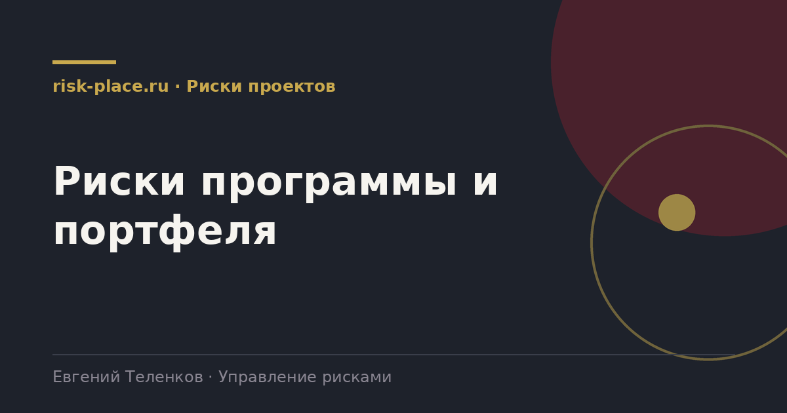

Главная · Библиотека · Риски проектов · Риски программы и портфеля
Библиотека · Риски проектов
На уровне программы риски перестают быть суммой проектных. Разбираем, что меняется при переходе от проекта к программе и портфелю и как собирать картину без потери смысла.

Проект спрашивает, уложимся ли мы в срок и бюджет. Программа спрашивает, получим ли мы заявленный эффект. Портфель спрашивает, тот ли набор работ мы вообще ведем.
Отсюда и разница в рисках. На проекте главные риски исполнения: сроки, подрядчики, ресурсы. На программе добавляются риски связей между проектами и риски эффекта. На портфеле главными становятся риски выбора и концентрации.
| Уровень | Главный вопрос | Типичные риски | Кому докладываем |
|---|---|---|---|
| Проект | Уложимся ли в срок и бюджет | Сроки, подрядчики, качество, ресурсы | Руководителю проекта и заказчику |
| Программа | Получим ли заявленный эффект | Связи между проектами, общие ресурсы, изменение выгод | Управляющему комитету программы |
| Портфель | Тот ли набор работ мы ведем | Концентрация, конкуренция за ресурсы, устаревание целей | Совету директоров и правлению |
Простое суммирование проектных рисков дает бессмысленную цифру: риски разных проектов складываются так же плохо, как складываются яблоки с километрами.
Рабочий способ иной. На уровень программы поднимаются только те риски, которые влияют на эффект программы или затрагивают несколько проектов сразу. Все остальное остается внизу и попадает наверх только числом, как показатель состояния проекта.
Второй элемент это общие риски: единый подрядчик, единая команда, единая технология. Их владельцем становится руководитель программы, потому что ни один проект не может ими управлять в одиночку.
Список из пяти-семи рисков уровня программы, каждый с владельцем, влиянием на эффект и решением, которое требуется. Плюс одна страница состояния проектов, где видно, у кого зашкаливает.
Отдельно стоит показывать риски, которые уже реализовались: комитет должен видеть цену прошлых решений, иначе обсуждение сводится к оптимизму.
Частые вопросы
Одна форма для любого вопроса
Расскажем о ближайших датах, предложим формат под ваш состав участников и назовем порядок бюджета.
Предпочитаете почту — напишите на info@risk-place.ru. Адрес: Москва, улица Скаковая, 32с2.
 risk-
risk-